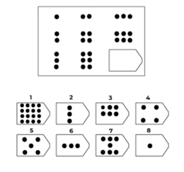

Matrix Figure
Figure Matrix questions contain a grouping of diagrams or figures in the shape of a rectangular matrix. This arrangement of diagrams in the form of a matrix forms the Figure Matrix. Each diagram in the figure matrix is there as a result of some rule. You will have to figure out this rule and make necessary decisions using this knowledge
Sample Example :-Select the correct option from 1 to 8
Solution :-
Option 3 is the correct answer. As we can see in each row pattern is increasing. In row 1 circle increased from 1, 2, to 3, and in row 2 pair of two circles was added Similarly in row 3, the group of three circles increased